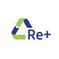

Para que um descarte seja realizado corretamente, é necessário que o primeiro passo ocorra nos domicílios brasileiros. Ao realizar uma primeira coleta seletiva, em casa, a pessoa deve separar o lixo normal do lixo eletrônico.
É necessário, por exemplo, separar o lixo orgânico dos eletrônicos, ou seja, não é possível deixar uma pilha já gasta com sobras de alimentos. Mas, além disso, é essencial descartar os eletrônicos em locais apropriados.
Cada município costuma ter um galpão para receber esse tipo de material e, para descobrir onde ele fica, vale a pena entrar em contato com a prefeitura da cidade. Caso os órgãos públicos ainda não tenham esse espaço reservado, vale a pena procurar uma empresa especializada, uma cooperativa de reciclagem ou até mesmo uma universidade que poderá realizar estudos com o material.
Caso o equipamento ainda apresente um bom estado de uso, é interessante doar para alguém que verá utilidade nele. Assim, um ciclo de reutilização será formado e esse eletrônico não irá para um lugar inapropriado.
Trilha Chico Mendes - Amazonia

Para produtos de pequeno porte como: celular, tablet, acessórios, pilhas e baterias o descarte deverá ser realizado sempre em uma de nossas urnas de coleta localizadas em nossas assistências técnicas autorizadas ou nas lojas Samsung distribuídas por todo o país.
Para concretização do descarte, o usuário/consumidor deverá solicitar por meio do e-mail log.reverse@samsung.com o Termo de Doação que deverá ser impresso, assinado e entregue junto com o aparelho a ser descartado.
Para proteção e segurança dos seus dados, antes de depositar os produtos em nossas urnas de coleta, o consumidor deverá apagar todos os seus dados pessoais, além de remover o chip da operadora e o cartão de memória.
O consumidor que pretenda descartar outros produtos da marca, deve entrar em contato com a Samsung por meio de nosso canal de comunicação exclusivo destinado à logística reversa, o log.reverse@samsung.com, informando sua localização (bairro, cidade e Estado) e o tipo do produto a ser descartado, para que possamos definir o melhor procedimento para viabilizar a devolução do produto pós-consumo, seja por meio da indicação do ponto de coleta mais próximo de sua residência (para produtos de pequeno e médio portes) ou para agendamento da coleta do produto em sua residência (para produtos de grande porte como refrigerador, lava e seca, ar condicionado e televisores acima de 46 polegadas).